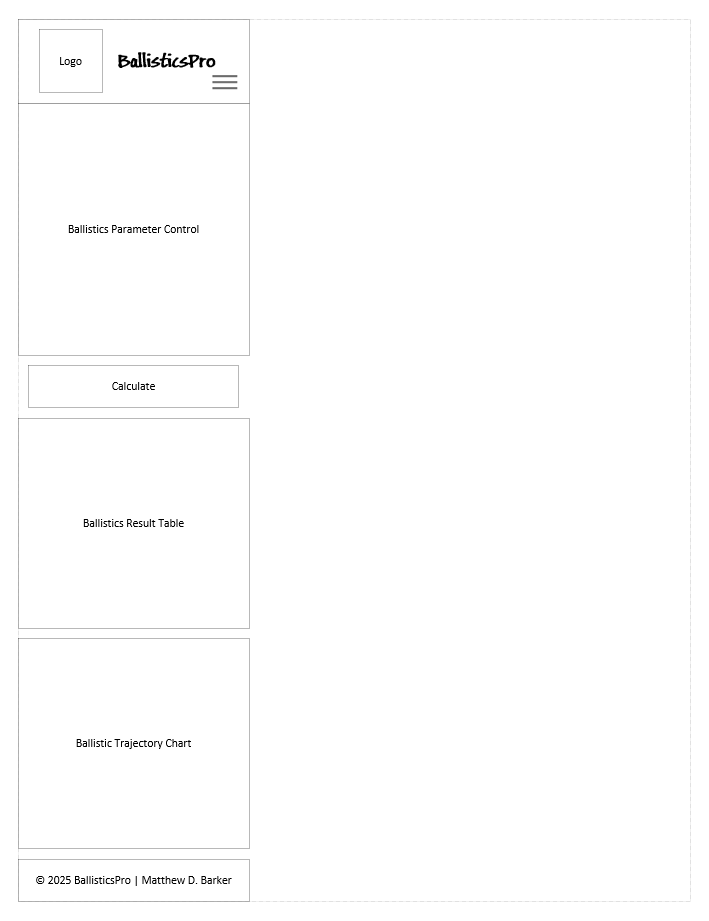
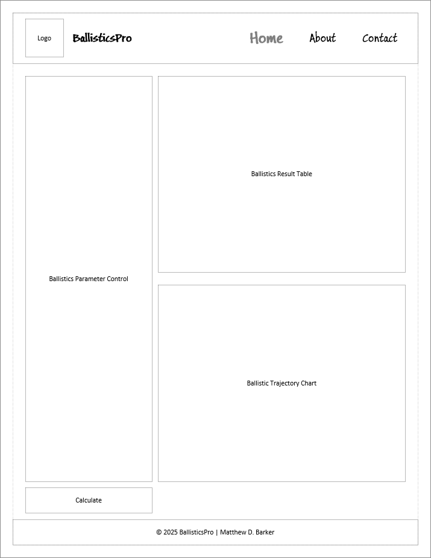

BallisticsPro
This name reflects the professional and technical nature of the website, which is a ballistics calculator designed for shooters. It emphasizes accuracy and expertise ("Pro"), appealing to hunters, competitive shooters, and firearms enthusiasts who need precise trajectory predictions. While domain availability isn't required for this class, a potential domain like ballisticspro.com would align with the branding.
The BallisticsPro website serves as a tool for shooters to calculate bullet trajectories, drop, velocity, energy, and wind drift. It provides an intuitive interface to input firearm, ammunition, and environmental data, offering detailed results in a table and visual chart. Additional features include saving and comparing load profiles, exporting range cards, and real-time adjustments for environmental factors, making it a practical resource for long-range shooting.
These questions reflect the needs of the target audience—hunters and competitive shooters—who want to optimize their shooting accuracy and make informed decisions about their equipment.
The color schema uses two primary colors inspired by the Ohio State University palette to create a bold and professional design:
Additional colors like OSU Black (#000000), OSU Gray (#666666), OSU Light Gray (#B0B0B0), and OSU Dark Gray (#333333) may be used for accents, text, or dark mode in the final site. A shadow color (rgba(0, 0, 0, 0.65)) may be used for depth effects. These colors are applied to this planning document to demonstrate their usage.
The typography includes two fonts to create a rugged, technical aesthetic while ensuring readability:
Both fonts fall back to Arial and serif if unavailable. These fonts are applied to this planning document to reflect their intended usage.
The mobile view uses a single-column layout for simplicity, ensuring usability on smaller screens:
Description: The header includes the logo and a hamburger menu icon for navigation. The main section has a prominent "Calculate Now" button (in OSU Scarlet, #BB0000) that opens a modal form for inputs. Below, the results table and trajectory chart are stacked vertically to fit the narrow screen. The footer contains copyright information.
The desktop view uses a two-column layout to optimize space and usability on larger screens:
Description: The header includes the logo on the left and navigation links on the right. The main section is split into two columns: the left column (40% width) contains the "Calculate Now" button (in OSU Scarlet, #BB0000) to trigger the input modal; the right column (60% width) displays the results table and trajectory chart side by side. The footer spans the bottom with copyright information.
Note: The images above are placeholders to be replaced with actual wireframe sketches created in a tool like Figma or on paper (scanned/photographed).
I will self-check and evaluate this site plan and the final website using common tools from the class, including: